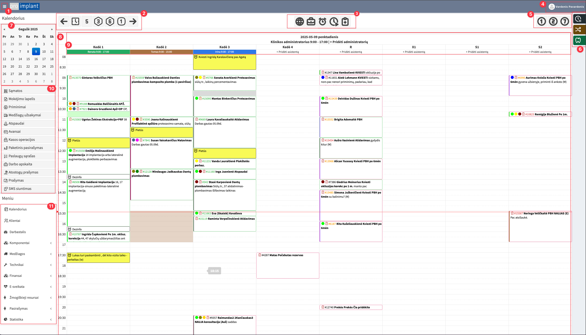
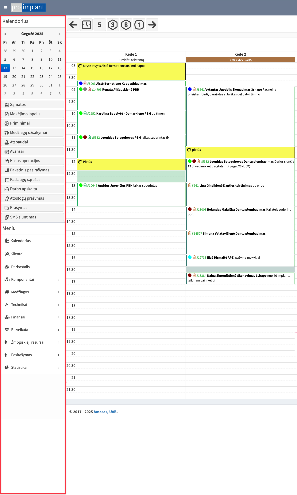
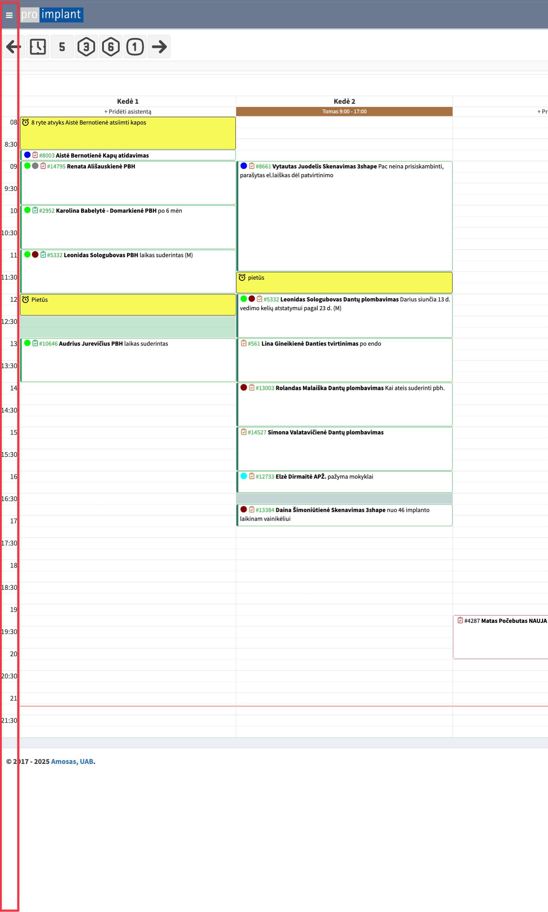

Kalendorius
Šiame skyriuje apžvelgiamos pagrindinės kalendoriaus sąsajos funkcijos.

- Meniu juostos suskleidimas
 
- Datos pasirinkimas
- Šiandien
- Po 5 savaičių
- Po 3 mėnesių
- Po 6 mėnesių
- Po 1 metų
- Kalendoriaus sluoksniai
- Bendras Šiame sluoksnyje galima kurti vizitus
- Tik vizitai Šiame sluoksnyje galima kurti vizitus
- Tik priminimai Šiame sluoksnyje galima kurti priminimus
- Ateities vizitai Žaliai dega, jeigu yra sukurtas vizitas su vėlesne data, nei kad matomas kalendoriuje. Raudonai, jeigu nėra
- E025 formos užpildymas Žymi ar užpildyta E025 forma?
- Vartotojo nustatymai
- Vaizduojamų dienų skaičius
- 1 dienos vaizdas
- 2 dienų vaizdas
- Savaitės vaizdas
- Laikinosios juostos
- Laikinoji juosta: Vizitas išimamas iš kalendoriaus, bet paliekama prie jo informacija (vizito pavadinimas, trukmė, gydytojas, pastabos).
- Kviesti anksčiau: Vizitas lieka kalendoriuje, bet sukuriamas jam identiškas vizitas. Kai nutempiamas į kalendorių, pradingsta pirminis.
- Kviesti higienai: Tokia pati logika kaip „Kviesti anksčiau“.
- Mini kalendorius
- Pagrindinis kalendoriaus vaizdas
- Kėdės informacija
- Data
- Administratorius ir jo darbo laikas
- Kėdės pavadinimas
- Asistentas ir jo darbo laikas
- Greitosios nuorodos
- Meniu zona
Gydytojų / asistentų spalvos kalendoriuje:
Gydytojai:
- Agata Černiauskienė – Terapiautė / Protezistė
- Ieva Arulytė – Terapiautė / Protezistė / Ordoline
- Darius Počebutas – Chirurgas / Protezistas / Direktorius
- Inesa Stigienė – Periodontologė
- Inga Simanavičienė – Endodontė
- Jonė Firantienė – Terapiautė / Protezistė
- Natalija Rudnikevič – Anesteziologė
Asistentai:
- Renata Naruševičienė – Vyr. assitentė / Higienistė
- Tomas Stasiūnas – Asistentas / Higienistas
- Ieva Mitkutė – Asistentė / Administratorė / Higienistė
- Irina Shatene – Asistentė (atsakinga už medicinines medžiagas)
- Kateryna Opryshko – Instrumentatorė (dirba sterilizacinėje)